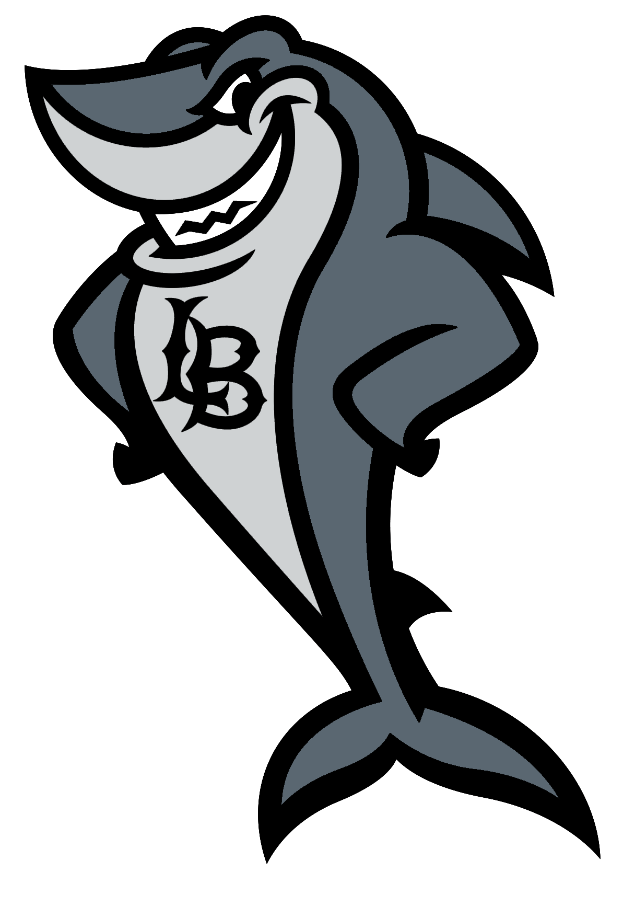

Undergraduate Student at CSULB
As I had stated earlier I am currently attending CSULB. I am a freshman and I am excited to learn many things in my major, Computer Science. I decided to undergo this major because of all of the possible things that can be created. Also I can make games.
Surprise...
While yes I do love to play video games as much as any computer science major, I also love to draw. I drew this when I was in 8th grade and was encouraged to participate in an art competition. I didn't win but it was still fun! Drawing allows for me to sketch out code and see where I am at. I draw shapes and arrows to compute a sort of flow chart and it works believe me.
So it turns out I don't have a full family photo..oops..
I am the only daughter in my family and the only one to have consistent good grades. I have my parents who both come from Mexico and I also have 3 older brothers. We are all 4 years apart. I am 18 then it's 22, 26, 30 years old. We also have a pet bunny named Sebastian and a dog named Toby. We love to go out to trips with each other and watch movies together.
Created by Vanessa Ramirez - CSULB Student
Adapted from w3schools.com